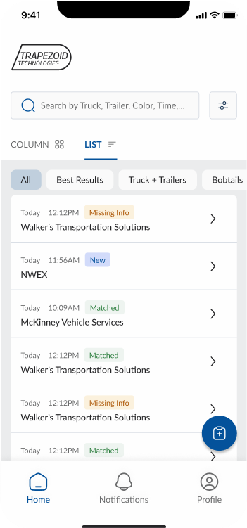
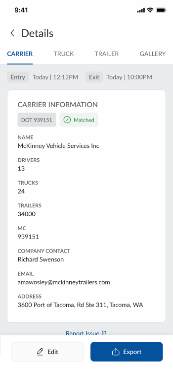
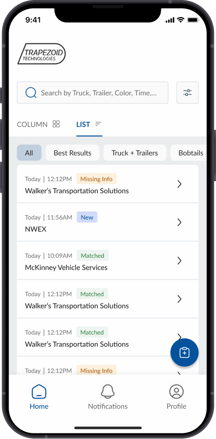
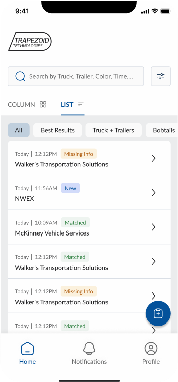
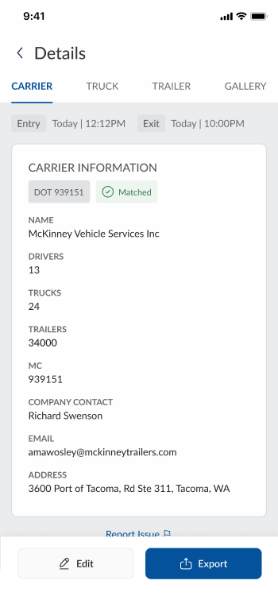
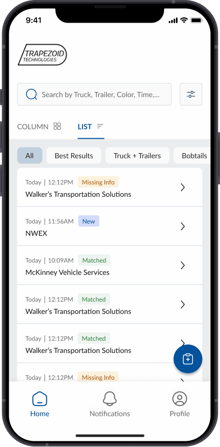

Design Process
Mid-Fidelity Wireframes
Each team member developed distinct dashboard design concepts. I created three mid-fidelity wireframe versions:
- Two versions using card-based layouts to segment and organize data visually
- One version with a list view to maximize data density on a single screen
Design Decisions - Informed by Research
Based on user research and real use cases, I designed specific features to address key pain points:
Omni-Search Bar
Universal entry point to search across multiple data types, enhancing efficiency and usability for users needing quick data location.
Gallery View Functionality
Since AI extracted data from captured images, users needed visual verification. The gallery view allowed seamless image review.
Data Accuracy Tags
Designed labeled tags like "Data Matched," "Not Matched," and "Missing Data" to provide immediate visual cues on data reliability.
Edit & Rerun Options
Given AI's potential for incorrect data extraction, I added clear edit and rerun actions with intuitive icons.
Color Palette & Design System
Given the client's identity as a trustworthy and reliable company, I selected blue as the primary color to represent trust and professionalism, with semantic colors for enhanced clarity.

High-Fidelity Design Iterations
Through continuous collaboration with the senior designer, I identified gaps and proactively implemented missing features to enhance functionality and user experience.
Design Iterations & Problem Solving
Based on insights from client discussions, we implemented new elements and refined existing ones, including edit functionality and data accuracy improvements.
Column View & Edit Functionality
List View Evolution
The list view design posed challenges as it required displaying large amounts of data. We iterated to find the optimal balance between information density and usability.
Final Dashboard Design
After client feedback, we combined elements from different team members' designs, with my color palette and list view concept being selected.
 




